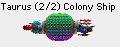
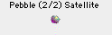
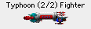

Las naves son lo que usas para explorar estrellas nuevas, defender tus colonias y colonizar planetas nuevos. Hay varios tipos de naves distintos, y puedes crear las tuyas.
Las naves de Spaceward Ho! son increíblemente enormes y caras. Por ejemplo, tu primera Nave colonia se llevará casi un tercio de los recursos totales de tu planeta, más toda la producción industrial del planeta durante treinta años. Es un barco grande.
Puedes construir naves en cualquiera de tus colonias. Para ello, haz clic en el planeta donde quieras construir naves y elige “ Construir naves… ” en el menú “ Naves ”, o simplemente haz doble clic en el planeta. Se abrirá un cuadro de diálogo grande. Este cuadro te permite tanto construir naves como diseñar nuevos tipos de nave.
En la parte izquierda del cuadro hay una lista de los tipos de nave disponibles. Si ninguno es de tu gusto, puedes diseñar una clase nueva jugando con los deslizadores de la parte inferior derecha.
Para mover una flota, basta con hacer clic en la flota y arrastrarla desde el planeta donde está hasta donde quieres que vaya. Si llega, verás una flecha que señala la ruta que seguirá tu flota. Cuando sueltes el ratón, oirás un “Hyahh!” que te avisa de que el rumbo está fijado. Cuando termines el turno, la nave seguirá su camino.
Si la flota no puede llegar a la estrella a la que has arrastrado, la ruta se mostrará con una línea gris de puntos. Si la flota tiene combustible suficiente para ir a la estrella que has elegido y volver, la ruta será una flecha de doble punta.
Para hacer que una flota se quede quieta, o para cancelar su movimiento, haz clic en el icono de la flota y mantenlo pulsado un segundo. Cuando lo hayas hecho bien, oirás un “Whoa!” al soltar el ratón.
Cuando una flota tiene destino y piensa moverse al terminar el turno, habrá una ruta que muestra adónde va. La ruta se dividirá en segmentos que indican cuántos turnos tardará en llegar.
Pulsa la tecla Tab para pasar a la flota siguiente de ese planeta.
Una flota reposta automáticamente cada vez que va a un planeta que es tuyo o de tus aliados. Si una flota no tiene combustible suficiente para salir, puedes enviar una Nave colonia a ese planeta, colonizarlo durante un turno y luego hacer que todos se marchen, o enviar una cisterna.
El rumbo de una flota no se puede cambiar mientras está entre planetas: en el hiperespacio no hay vuelta atrás.
También puedes hacer Control-clic (o clic derecho) en una flota para hacer varias cosas relacionadas con ella.
Si una flota tiene una línea tachada, se está disolviendo y se desguazará para convertirse en metal el turno siguiente.
A veces querrás dividir una flota en trozos o juntar varias flotas. Para ello, elige “ Organizar flotas… ” en el menú “ Naves ”. Luego haz clic y arrastra las naves hasta que queden distribuidas como quieres.
Puedes combinar naves de distintos tipos en una misma flota. Pero cada tipo de nave de una flota puede tener sus propias opciones de flota. La actitud en combate se explica por sí sola. Llegada retardada significa que la nave calculará su llegada del hiperespacio para que sea un poco después de la hora de llegada normal. Si hay una batalla, una nave retardada se perderá el comienzo.
A medida que avanza la partida, verás que el metal escasea y que tus naves obsoletas son casi inútiles. Quizá quieras deshacerte de algunas de tus naves más viejas. Puedes recuperar el 75% del metal de una flota que esté en tus colonias disolviéndola (elige “ Disolver la flota actual ” en el menú “ Naves ”). O puedes desguazar todo un tipo de nave (elige “ Desguazar tipos de nave” en el menú “Naves” ).
Cuando marcas un tipo de nave o una flota para desguazarlos, no se desguazan hasta que termines el turno. Si te arrepientes antes, puedes deshacer el cambio antes de terminar el turno.
Si solo quieres disolver parte de una flota, usa el cuadro de diálogo “ Organizar flotas… ” para dividir la flota entre las naves que quieres conservar y las que quieres desguazar.
Cuando disuelves naves que están sobre una colonia, el metal pasa al instante a tu reserva global, y puedes usarlo de inmediato. Si no eres dueño del planeta sobre el que están las naves, el metal caerá sobre el planeta. La siguiente persona que lo colonice podrá extraer entonces el metal de tus naves desguazadas.
Esta es posiblemente la parte más genial del juego. A medida que aumente tu tecnología, querrás empezar a construir naves más avanzadas con estas tecnologías nuevas. Es fácil. Solo tienes que fijar los niveles de tecnología como quieras que sea tu nuevo tipo en el cuadro de diálogo “ Construir/diseñar naves …”. Basta con mover los deslizadores para fijar las cualidades de la nueva nave. (El extremo derecho del deslizador es siempre tu nivel de Tecnología actual.) Cuando tengas la nave como la quieres, constrúyela (pulsando el botón “+”) y el prototipo se diseñará y construirá automáticamente.
Hay cuatro grandes clases de naves: Naves colonia, Satélites, Exploradores y Cazas.

Las naves colonia transportan gente y colonizan estrellas nuevas por ti. Las Naves colonia son increíblemente caras, tanto en Dinero como en Metal. Cuestan tanto que querrás construir solo unas pocas. Eso, y que la miniaturización no les sirve de mucho, hará que probablemente no quieras usar nada de Mini en tus Naves colonia. Las Naves colonia también son lo primero a lo que dispara el enemigo en una batalla, así que tendrás que ir con cuidado con ellas.
Los satélites son naves que no tienen motores. Eso significa que su Alcance es cero. Los Satélites son un medio barato y eficaz de defender tus planetas de los ataques enemigos. Por desgracia, no pueden moverse; solo pueden defender el planeta donde se construyen. Los Satélites son mucho más pequeños que las naves normales, así que no hacen falta tantos disparos para destruirlos. Claro que tampoco hace falta ni de lejos tanto metal para construir Satélites como Cazas.Cuando un planeta tiene Satélites, tendrá uno o más anillos alrededor en el Mapa estelar.

Los Exploradores y los Cazas son tus naves básicas. La diferencia entre unos y otros es un equilibrio entre Motores y Armas. Los Exploradores pueden tener un Alcance tres unidades superior a tu tecnología de Alcance. Por desgracia, su tecnología máxima de Armas y de Escudos es una unidad inferior a tus niveles actuales. Esto hace que los Exploradores sean ideales para explorar, pero no demasiado buenos en combate.Spaceward Ho! pondrá automáticamente a cada Explorador en su propia flota, para que pueda salir volando por su cuenta a explorar. Los Cazas se agrupan automáticamente en un solo grupo.
Los Acorazados son los buques de guerra de una flota. Muy grandes. Muy potentes. Muy caros. Si puedes construir uno, pega un buen puñetazo.
Las Cisternas pueden viajar con tus otros tipos de flota o detrás de ellos y reabastecerán cada turno a las naves aparcadas en la misma estrella en que estén. Cada cisterna tiene un límite de eficacia y no podrá reabastecer enseguida a flotas grandes.
Mmm. Naves de formas de vida. Idea interesante. Me pregunto cómo funcionarían…
Construir el prototipo de un nuevo tipo de nave cuesta más que construir las siguientes: cuesta esfuerzo pulir los defectos y hacer pruebas. Esto es especialmente cierto en las naves con mucha miniaturización. Ten en cuenta que el coste de desarrollo se paga una sola vez por cada nuevo tipo de nave.
Traducción al español del remake, no oficial, del manual de Delta Tao. La página en inglés (en inglés).